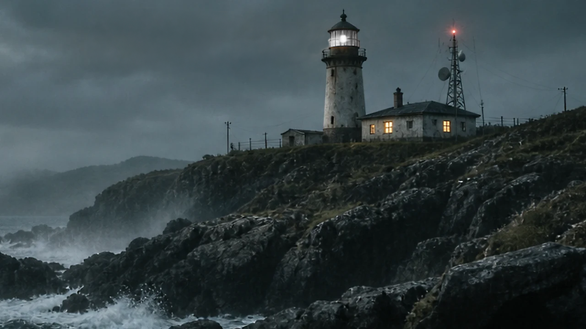

NCBS / EMPFANGSSTATION 01
DEAD//AIR
THE COAST IS STILL TRANSMITTING.
Die letzte Schicht verschwand nach einem Hilferuf. Das Kamerasystem ist noch aktiv.
MHz
STABLE FEED
CAMERA 01 // NORTH COAST FEED
ÜBERTRAGUNG AKTIV
NCBSMODEL 1993–C

AKTUELLER SIGNALZUSTANDNORMAL / 87.6 MHz
CH–01RX